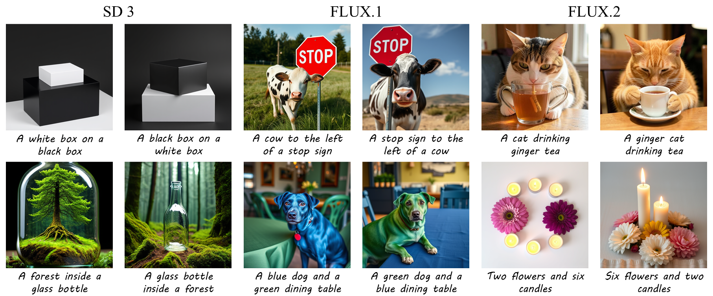
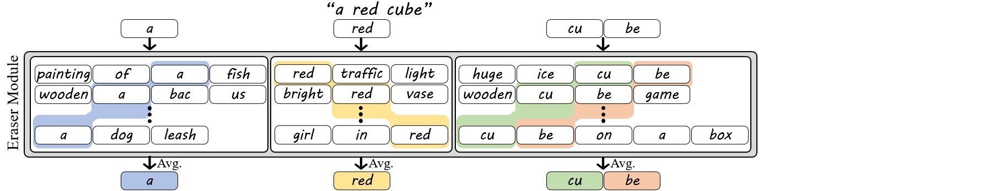
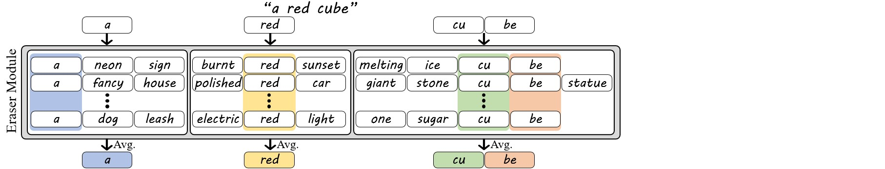
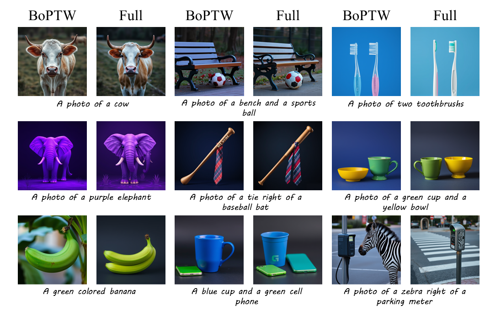

1 Technion – Israel Institute of Technology
2 MIT CSAIL
* Equal contribution
Text-to-image models rely on text prompts as their primary interface to human intent. Prompts are encoded by a text encoder into embeddings that condition the image generation process. Beyond individual token meanings, text embeddings encode contextual information across the full prompt, such as compositionality and attribute binding. However, whether image models actually exploit this richer information remains underexplored. Here, we address the question: Which aspects of text representation are essential for image generation? We show that text-to-image diffusion transformer-based models commonly rely only on two relatively straightforward aspects of text representations: (i) the merging of adjacent tokens into a word representation, for words spanning multiple tokens, and (ii) word order, which is imprinted by the positional embedding of the text-encoder. To show this, we construct a new text embedding that encodes only individual word meanings and order but lacks any contextual information about the full prompt. We find that this bag of position-tagged words representation is sufficient to successfully guide image generation, achieving visual quality and text fidelity that are on par with full text embedding-guided generation. This demonstrates that, contrary to common belief, text-to-image models often do not use the rich information encoded in the text embedding beyond individual word meanings and word order. Instead, the decoding of complex linguistic structures is performed by the image model itself.

We begin by removing contextual information from each token embedding while preserving its standalone meaning. For each token, we gather sentences containing it in different contexts, encode them, and average the token embeddings across occurrences.
BoT embeddings are inherently ambiguous, since tokenization often does not uniquely determine the original word. For example, "housework" and "workhouse" both decompose into the tokens "house" and "work", making them indistinguishable from the BoT embedding alone. To address this, we introduce the BoW embedding, which preserves the cohesion of multi-token words. While single-token words are processed as in BoT, embeddings of multi-token words are averaged only across sentences where the tokens appear as part of the same word (e.g., "cube" → "cu", "be"). This preserves internal word structure while marginalizing out surrounding context.

While BoW embeddings disambiguate words with shared tokens, they are still insensitive to word order. Sentences with the same words can differ in meaning (e.g., "a white cube on a black cube" vs. "a black cube on a white cube"). To fix this, we introduce BoPTW embeddings, which extend BoW by retaining positional information during context erasure. Since text encoders implicitly encode token order, we average each token only over sentences where it appears in the same position as in the prompt (and, for multi-token words, within the same word). For example, the embedding of "cube" is computed only from sentences where "cube" appears at the same token position as in the original prompt. This preserves word identity and order while removing inter-word context.

To compare the adherence of the images generated for the full-embedding to those generated for contextless embedding, we employ Gemma-3 as a VLM judge and determine the metric non-inferiority rate, which is the percentage of prompts for which the image generated with the contextless embedding is judged to be at least as good as the image generated with the full embedding. Notably, the BoPTW embedding (first row) achieves a non-inferiority rate of at least 65% with respect to the full embedding (the combination of the two greenish areas) for most benchmarks and models. This is while the non-inferiority rate of the full-embedding with respect to BoPTW (the combination of the purple and dark green areas) is typically only 70%-90% for most models and datasets.

TBD